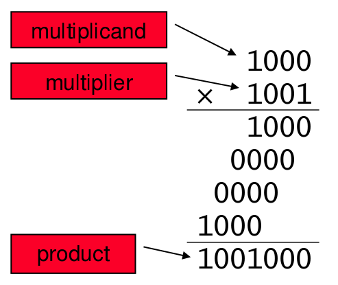
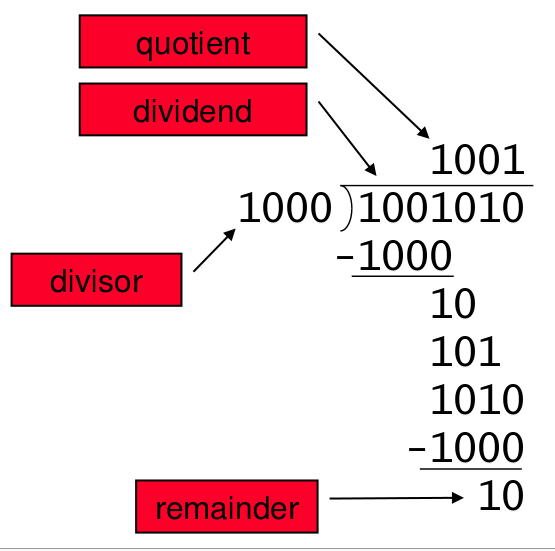

Binary numbers are made up of bits. The bits of a binary number are the ones and zeroes that make up the total number. We call the rightmost bit the least significant bit and the leftmost bit the most significant bit. This is because the farther to the left a bit is in a number, the more significance that bit will have over the total value of the number.
Addition in binary is the same as addition in decimal except for the different bases. Because binary numbers only contain ones and zeroes, the only possible combinations for addition are: 0 + 0 = 0, 0 + 1 = 1, 1 + 0 = 1, and 1 + 1 = 10. In the final case, the result is made up of two bits because the addition operation results in a carry.
Subtraction in binary is very similar to binary addition. The possible combinations for binary subtraction are: 1 - 1 = 0 and 1 - 0 = 1. Other combinations would require a means for representing negative numbers.
Shift operations can also be applied to binary numbers. A shift operation involves moving the bits of a binary number to either the left or the right. If a shift is performed, the side of the number that is being shifted away from is filled with zeroes. Shifting a binary number right one bit results in the total value of that number being multiplied by 2. Shifting a binary number left one bit results in the total value of that number being divided in half.
Multiplication in binary is achieved by combining left shifts and addition operations. First, multiply the first number by the least significant bit of the second number. Then, continue to multiply the first number by the next least significant bit of the second number and shift the result left by one bit. After the entire length of the second number has been traversed, find the sum of the results of all of these multiplications. This value is the result of the first number times the second number.
Division in binary can be achieved using the same long division algorithm used for decimal numbers.
